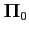
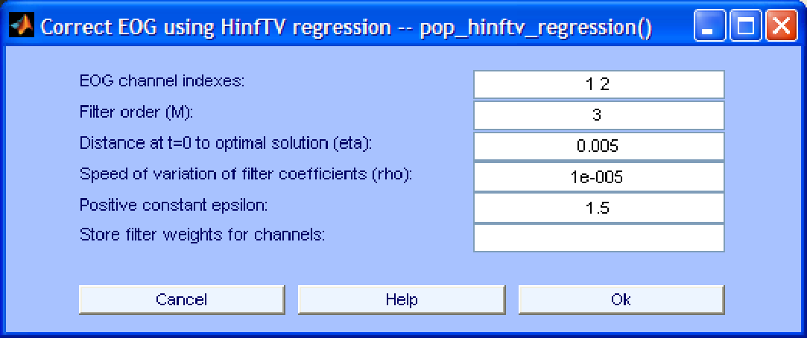
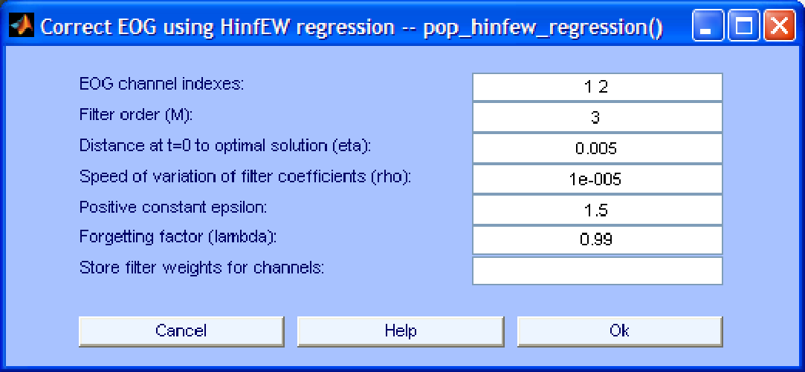

Next: EOG and EMG removal
Up: EOG removal using regression
Previous: Stable Recursive Least Squares
Contents
The toolbox includes two adaptive algorithms (time varying and exponentially weighted) based on the
principles for removing EOG artifacts using one or more reference EOG channels. The details of these two algorithms are described in [17], where it was found that
-based algorithms clearly outperformed the LMS algorithm. The graphical interfaces of these algorithms are shown in Fig. 4 and Fig. 5. Their specific parameters are:
- Distance at t=0 to optimal solution (eta). This is a positive factor reflecting the a priori knowledge of how close the initial filter weights are to the optimal initial value. It corresponds to parameter

in [17]. Smaller (resp. larger) values of this parameter are suitable when the initial filter weights are believed to be far (resp. close) from its optimal value. However, in most cases, the user does not need to change the default value. This is especially true for the current implementation, which does not let the user set the initial filter weights.
- Speed of variation of filter coefficients (rho). This is a positive factor reflecting a priori knowledge about how fast the optimal filter weights vary with time. If the variation is believed to be slow (resp. fast) a larger (resp. smaller) value might be more appropriate.
- Positive constant (epsilon). The definition of this positive constant can be found in [17]. In general, the default value should work well in most cases.
Figure 4:
Interface window for EOG removal using the TV
norm algorithm
|  |
Figure 5:
Interface window for EOG removal using the EW
norm algorithm
|  |
Next: EOG and EMG removal
Up: EOG removal using regression
Previous: Stable Recursive Least Squares
Contents
gomezher
2007-12-10